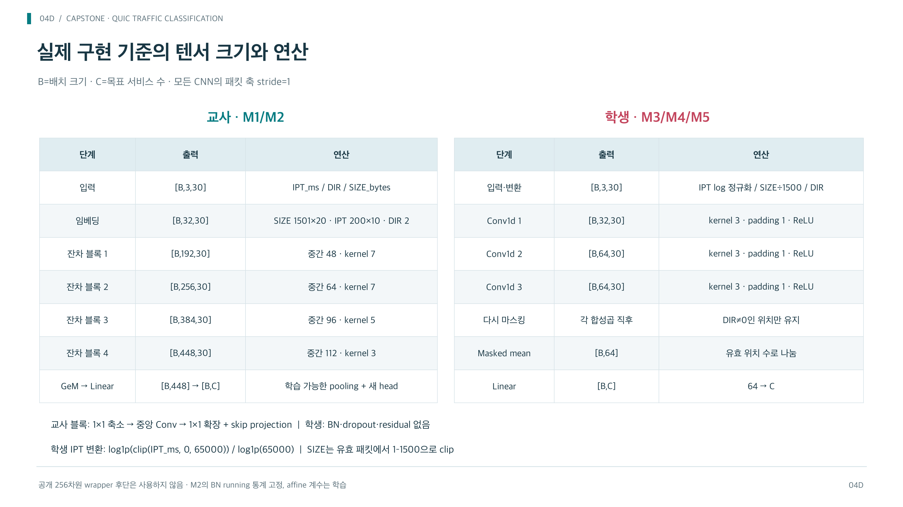
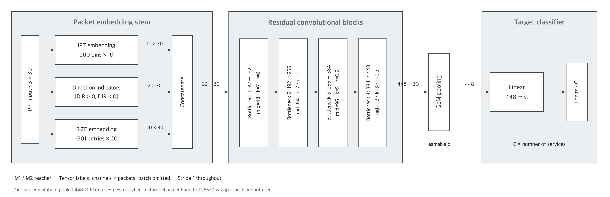
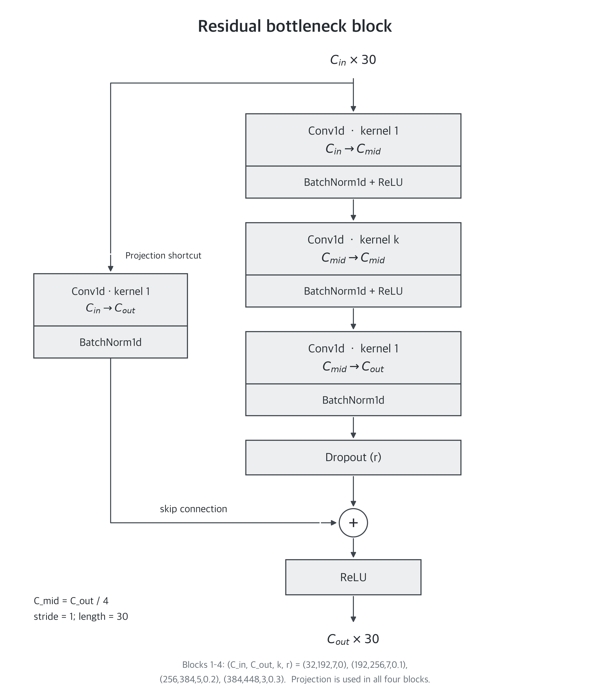
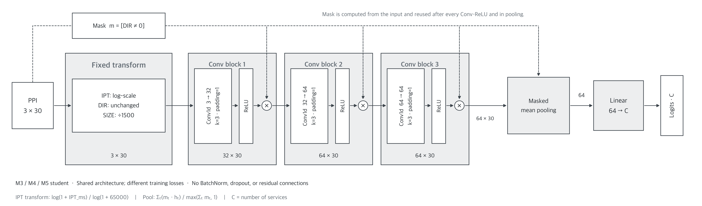
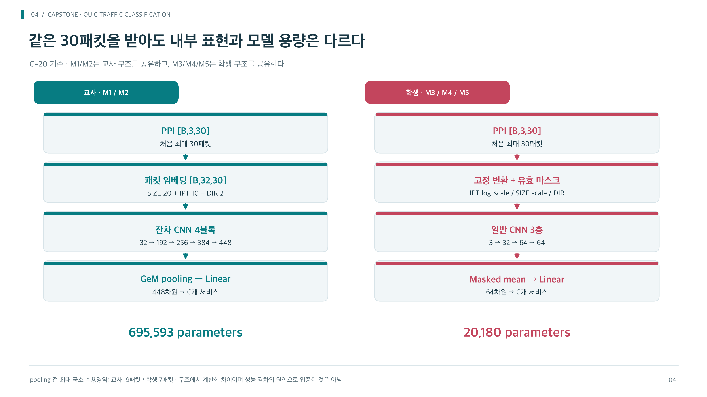
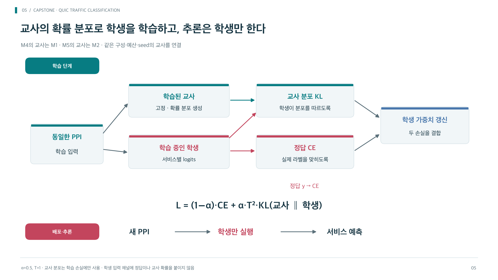
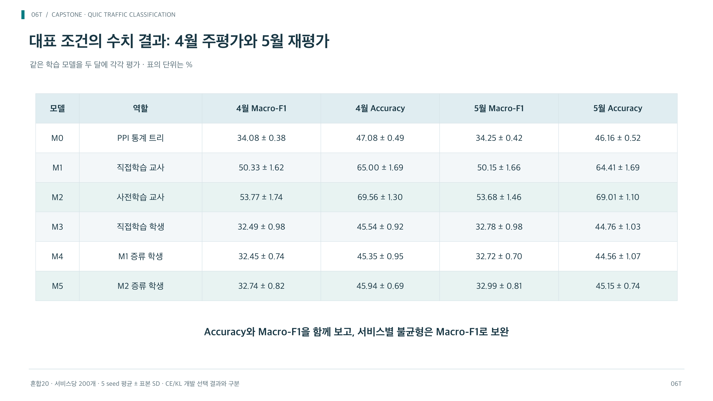

04D_architecture_detail · 상세/부록
모델 구조 상세

실제 코드 및 architecture snapshot 기준. 교사의 임베딩·pooling과 학생의 고정 변환·마스킹은 서로 다르다.
04P_teacher_architecture · 본문
논문식 구조도 · 교사 전체

M1/M2의 실제 forward 경로. 채널×패킷 표기로 배치 차원을 생략했다. 임베딩 연결 순서는 IPT(10)→DIR(2)→SIZE(20)이며, 448차원 GeM 뒤에 새 Linear(448,C)를 바로 연결한다. 참고 그림의 Feature Refinement 및 공개 wrapper의 256차원 neck은 사용하지 않는다.
04Q_residual_bottleneck · 본문
논문식 구조도 · 잔차 블록 내부

현재 교사의 네 블록은 모두 입출력 채널 수가 달라 1×1 Conv+BN projection을 사용한다. Dropout은 잔차 가지의 마지막 BN 이후, 합산 이전이다. 첫 블록 r=0은 Identity이며 모든 stride는 1이다.
04R_student_architecture · 본문
논문식 구조도 · 학생 전체

M3/M4/M5의 동일한 구조. 입력은 공통 clip·패딩 후이며 DIR≠0에서 만든 마스크를 각 Conv→ReLU 뒤에 곱하고 pooling 분모에도 사용한다. 실선은 특징, 점선은 마스크 경로다. [B,채널,패킷]에서 B를 생략했다.
04_architecture · 본문
교사와 학생 구조 요약

교사는 공개 30pktTCNET backbone을 활용하되 pooled 448차원에 새 분류기를 연결했다. 256차원 wrapper 출력 경로가 아니다.
05_distillation · 본문
지식 증류 학습과 추론

교사는 학습 중 동결한다. 교사 logits는 동일 fitting 입력에서 미리 계산해 재사용했다. T=1이어도 전체 분포를 따르는 KL이 남는다.
06T_main_results · 본문
대표 성능 결과표

표의 ±는 표본 표준편차. 모델 선택은 2월 검증에서 수행했으며 4·5월은 동결 모델의 평가다.